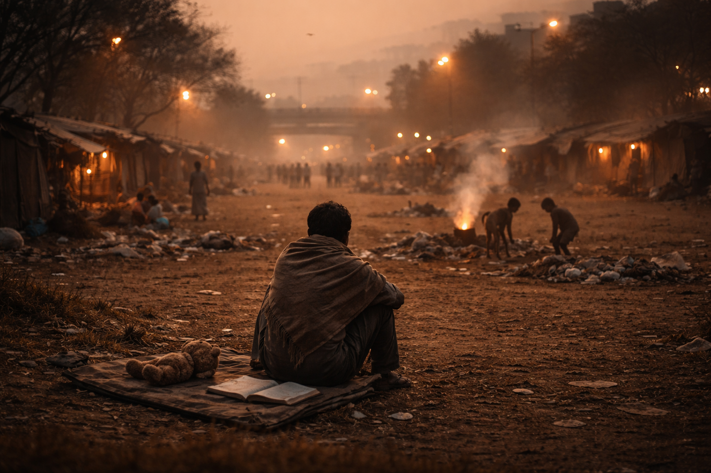

Type: കവിത
Written by: ഉണ്ണികൃഷ്ണൻ കെ കെ
ബിഹാറിൻ്റെ തെരുവോരങ്ങളിലൊരൊറ്റയാൻ കാറ്റുപോലലഞ്ഞ് ഒടുവിൽ ഒരു മൈതാനത്തിൻ്റെ മൂലയിലെവിടെയൊ ചൂളിവന്നിരുന്ന് ഞാനെൻ്റെ സ്വപ്നങ്ങളുടെ കണക്കു പുസ്തകങ്ങൾ തുറന്ന് അതിലീ പ്രാർത്ഥനകൾകുറിച്ചിട്ടു..!
തെരുവോരങ്ങളിലൂടെയുള്ള എൻ്റെ സന്ധ്യാ നടത്തങ്ങളിൽ വിവസ്ത്രരായി തണുപ്പണിഞ്ഞ് തെരുവുപുല്ലിൻ്റെ മെത്ത പുൽകിയുറങ്ങുന്ന പിഞ്ചോമനകളെ കാണാതിരിക്കേണമേ..!
കാറ്റിൻ്റെ താളത്തിനൊത്ത് പാറിപ്പറക്കാൻ നൊരുങ്ങുന്ന വഴിയോരക്കാരുടെ കുടിൽപ്പൂക്കളുടെ പ്ലാസ്റ്റിക്കിതളുകൾ എന്നെന്നേക്കുമായി മണ്ണിലുറച്ചു നിൽക്കേണമേ..!
ഇരുളിൻ്റെ മറയുടുത്ത് കൈയ്യിൽ നീർക്കുടങ്ങളും ടോർച്ചുലൈറ്റുമായി കുട്ടമായ് കുറ്റിക്കാടുകളുടെ മറതേടുന്ന പെൺ കിടാങ്ങളുടെ വള കിലുക്കങ്ങൾ കേൾക്കാതിരിക്കേണമേ..!!
കൈവെള്ളയിൽ കളിക്കോപ്പുകൾ പേറേണ്ട തൈക്കിടാങ്ങളെ അറവുശാലയിലെ ചോരക്കത്തിയുടെ കൂടെക്കളിക്കുന്ന വെളിച്ചപ്പാടുകളായി കാണാതിരിക്കേണമേ..!
മാലിന്യക്കൂമ്പാരങ്ങളിൽ ഈച്ചകൾക്കൊപ്പമാർത്ത് വളപ്പൊട്ടുകളും ഗാന്ധിക്കടലാസ്സിൻ്റെ കച്ചിത്തുരുമ്പു തിരയുന്നത് പൊന്നു പൈതങ്ങളെ കാണാതിരിക്കേണമേ..!
നിർമ്മലരായ കുഞ്ഞുകൈകൾ വാൾതലപ്പേന്തി അലറിവിളിക്കുന്ന മതഘോഷാഭാസങ്ങളുടെ ചൂളംവിളികൾ കേൾക്കാതിരിക്കേണമേ..!
നിറം മങ്ങിയ കലാലയങ്ങളുടെ ഒഴിഞ്ഞ ബെഞ്ചുകളും മുഴങ്ങാത്ത മണികളുടെ ഉള്ളു വിങ്ങുന്ന നൊമ്പരങ്ങളും കേൾക്കാതിരിക്കേണമേ..!
മനുഷ്യവിസർജ്യങ്ങൾ കൊണ്ട് അരികുകളലങ്കരിച്ച രാജപാതകളുടെ കണ്ണീർക്കണങ്ങൾ ഇനിയൊരിക്കലുമെങ്ങും കാണാതിരിക്കേണമേ..!
എൻ്റെ സന്ധ്യാനട ത്തങ്ങളിൽ അന്നം തേടി അന്യൻ്റെ കൈ പിടിക്കാനോടിയെത്തുന്ന കുഞ്ഞുപൈതങ്ങളുടെ വിളറിയ മുഖങ്ങൾ ആൾക്കൂട്ടത്തിലൊരിക്കലും കാണാതിരിക്കേണമേ..!
അല്ലയോ പ്രഭോ ഒടുവിലായ്,എൻ്റെ പ്രാർത്ഥനകളിൽ ദയതോന്നി നീ എന്നന്നേക്കുമായെന്നെ അന്ധനാക്കിത്തീർക്കാതിരിക്കാൻ ദയയുണ്ടായിരിക്കേണമേ..!